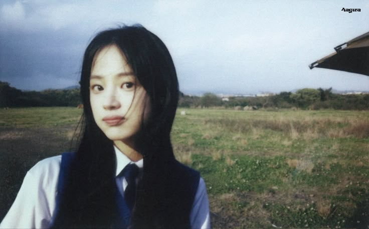

Jordhy Branenda

*pake foto Minji dulu karena belum ada foto bagus 😅
Summary
Technology has always fascinated me, how a few lines of code can create something impactful.
Hi, I'm Branenda Jordhy, an Informatics Engineering Student @ Bandung Institute of Technology,
diving into programming and development to explore it firsthand.
From writing my first lines of code to building small projects, every step is an opportunity to learn, experiment, and improve.
I enjoy solving problems, exploring new ideas, and seeing how technology can turn creativity into reality.
Every challenge is a chance to grow, and I’m excited to see where this path takes me.
Education
Bandung Institute of Technology
Bachelor of Engineering – BE, Informatics Engineering
GPA: 3.78/4.00
Relevant Coursework: Artificial Intelligence and Data Literacy; Computer Organization and Architecture;
Algorithm and Programming I; Computational Logic; Discrete Mathematics
Smadara International School
High School Degree of Natural Sciences and Mathematics
Activities
STEI–K '24
Design Manager for the Jakang STEI–K '24 Project
-
Responsible for planning, managing, and executing all graphic design aspects. His role involved developing
a visual concept that aligned with the school's identity, coordinating with the design team to ensure
consistency and quality, and collaborating with production team to achieve the desired final product.
-
He managed design timelines, oversaw design revisions based on stakeholder feedback, and ensured that
the final design met both aesthetic and functional standards.
The Sandbox 2.0 by IEEE ITB Student Branch
Staff of Design Division
-
Collaborated with the team to develop visual assets and stuff.
-
Executed graphic design tasks using Adobe Illustrator, Canva, and Figma, ensuring timely delivery and
consistency.
IMPACT 5.0
Staff of Design Division
-
Collaborated with the team to develop visual assets and stuff.
-
Executed graphic design tasks using Adobe Illustrator, Canva, and Figma, ensuring timely delivery and
consistency.
Publications
Anomaly Detection in AI Knowledge Graphs: A Discrete Mathematical Framework Against Graph Poisoning
Author: Made Branenda Jordhy
-
Investigated the effectiveness of graph-based anomaly detection in AI knowledge graphs using a lightweight
and interpretable framework.
-
Published on informatika.stei.itb.ac.id
Projects
Developer for Fruit Sense: Fruit Ripeness Detection System (Machine Learning Project)
-
Collaborated in a 4-person team to build a Convolutional Neural Network (CNN) model to classify mango
ripeness stages using image data and TensorFlow.
-
Trained and evaluated the model on real-world datasets, achieving high accuracy in maturity level
prediction and deployed via Streamlit web app.
Developer for HEALTCORE-N: Hospital Management System (C Language Project)
-
Implemented core features including patient queueing, doctor assignment, medicine inventory, etc. using
modular C and ADT design.
-
Collaborated in a 4-person team to build a fully functional CLI-based hospital simulation system aligned
with IF1210 Algorithm and Programming I, STEI ITB.
Developer for Pokémon Battle Game (Prolog Logic Programming Project)
-
Collaborated in a 4-person team to design and implemented core gameplay mechanics including turn-based
battles, status effects, skill cooldown etc. using declarative logic.
-
Utilized Prolog facts and rules to manage dynamic game state, player progression, and AI-based enemy
behavior on an 8x8 grid map.
Additional
Technical Skills: C, C++, Python, Prolog, Adobe Illustrator, Figma, Adobe Photoshop
Languages: Bahasa Indonesia, English, Bahasa Bali